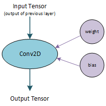
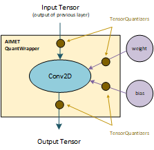
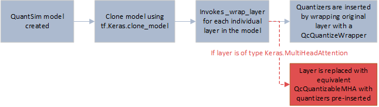

Quantization-Aware Training with a Keras Transformer Model¶
This notebook shows a working code example of how to use AIMET to perform QAT (Quantization-aware training) for transformer models built in Keras. QAT is an AIMET feature adding quantization simulation ops (also called fake quantization ops sometimes) to a trained ML model and using a standard training pipeline to fine-tune or train the model for a few epochs. The resulting model should show improved accuracy on quantized ML accelerators.
Overall flow¶
This notebook covers the following
Load the dataset
Create the model in Keras
Train and evaluate the model
Quantize the model with QuantSim
Fine-tune the quantized model accuracy with QAT
1. Load the dataset
This notebook relies on the IMDB dataset for sentiment analysis, as provided by Keras.
[ ]:
from tensorflow import keras
vocab_size = 20000 # Only consider the top 20k words
maxlen = 200 # Only consider the first 200 words of each movie review
(x_train, y_train), (x_val, y_val) = keras.datasets.imdb.load_data(num_words=vocab_size)
print(len(x_train), "Training sequences")
print(len(x_val), "Validation sequences")
x_train = keras.preprocessing.sequence.pad_sequences(x_train, maxlen=maxlen)
x_val = keras.preprocessing.sequence.pad_sequences(x_val, maxlen=maxlen)
Currently, only Keras models built using the Sequential or Functional APIs are compatible with QuantSim - models making use of subclassed layers are incompatible. Therefore, we use the Functional API to create the model used in this example.
[ ]:
import tensorflow as tf
from tensorflow.keras import layers
embed_dim = 32 # Embedding size for each token
num_heads = 2 # Number of attention heads
ff_dim = 32 # Hidden layer size in feed forward network inside transformer
############## FUNCTIONAL MODEL ##############
inputs = layers.Input(shape=(maxlen,))
# Embedding Layer
positions = tf.range(start=0, limit=maxlen, delta=1)
positions = layers.Embedding(input_dim=maxlen, output_dim=embed_dim)(positions)
x = layers.Embedding(input_dim=vocab_size, output_dim=embed_dim)(inputs)
x = x + positions
# Transformer Block
x = layers.MultiHeadAttention(num_heads=num_heads, key_dim=embed_dim)(x, x)
x = layers.Dropout(0.1)(x)
x = layers.LayerNormalization(epsilon=1e-6)(x)
x = layers.Dense(ff_dim, activation="relu")(x)
x = layers.Dense(embed_dim)(x)
x = layers.Dropout(0.1)(x)
x = layers.LayerNormalization(epsilon=1e-6)(x)
# Output layers
x = layers.GlobalAveragePooling1D()(x)
x = layers.Dropout(0.1)(x)
x = layers.Dense(20, activation="relu")(x)
x = layers.Dropout(0.1)(x)
outputs = layers.Dense(2, activation="softmax")(x)
################################################
functional_model = keras.Model(inputs=inputs, outputs=outputs)
3. Train and evaluate the model to get a baseline accuracy
Before we can quantize the model and apply QAT, the FP32 model must be trained so that we can get a baseline accuracy.
[ ]:
functional_callback = tf.keras.callbacks.TensorBoard(log_dir="./log/functional", histogram_freq=1)
functional_model.compile(optimizer="adam", loss="sparse_categorical_crossentropy", metrics=["accuracy"])
history = functional_model.fit(
x_train, y_train, batch_size=32, epochs=1, validation_data=(x_val, y_val), callbacks=[functional_callback]
)
[ ]:
# Evaluate the model on the test data using `evaluate`
print("Evaluate model on test data")
results = functional_model.evaluate(x_val, y_val, batch_size=128)
print("test loss, test acc:", results)
4. Create a QuantizationSim Model and determine quantized accuracy
Create Quantization Sim Model
Now we use AIMET to create a QuantizationSimModel. This basically means that AIMET will insert fake quantization ops in the model graph and will configure them. A few of the parameters are explained here
quant_scheme: We set this to “QuantScheme.post_training_tf_enhanced”
Supported options are ‘tf_enhanced’ or ‘tf’ or using Quant Scheme Enum QuantScheme.post_training_tf or QuantScheme.post_training_tf_enhanced
default_output_bw: Setting this to 8, essentially means that we are asking AIMET to perform all activation quantizations in the model using integer 8-bit precision
default_param_bw: Setting this to 8, essentially means that we are asking AIMET to perform all parameter quantizations in the model using integer 8-bit precision
There are other parameters that are set to default values in this example. Please check the AIMET API documentation of QuantizationSimModel to see reference documentation for all the parameters.
[ ]:
from aimet_common.defs import QuantScheme
from aimet_tensorflow.keras.quantsim import QuantizationSimModel
model = QuantizationSimModel(model=functional_model,
quant_scheme=QuantScheme.post_training_tf_enhanced,
rounding_mode='nearest',
default_output_bw=8,
default_param_bw=8)
QuantSim works by wrapping each layer in the model with a Quantization Wrapper that simulates the effects of quantization on the inputs, outputs, and parameters of the layer (visualized below). A regular Conv2D Keras layer is displayed on the right, while a Conv2D layer after a quantization wrapper has been applied is displayed on the left.  
If a multi-head attention layer is encountered in the model, the original layer is replaced with a custom quantizable version that gives the QuantizationSimModel access to the inputs and outputs of internal ops within the layer, so that quantization wrappers can be applied at a more granular level than the entire MHA layer. This is necessary in order to accurately simulate the effects of on-target quantization.
This works by making use of Keras’s built-in clone_layer function, which allows us to clone and modify the FP32 model layer by layer. A more detailed call flow diagram is displayed below. 
Compute Encodings
Even though AIMET has added ‘quantizer’ nodes to the model graph but the model is not ready to be used yet. Before we can use the sim model for inference or training, we need to find appropriate scale/offset quantization parameters for each ‘quantizer’ node. For activation quantization nodes, we need to pass unlabeled data samples through the model to collect range statistics which will then let AIMET calculate appropriate scale/offset quantization parameters. This process is sometimes referred to as calibration. AIMET simply refers to it as ‘computing encodings’.
So we create a routine to pass unlabeled data samples through the model. This should be fairly simple - use the existing train or validation data loader to extract some samples and pass them to the model. We don’t need to compute any loss metric etc. So we can just ignore the model output for this purpose. A few pointers regarding the data samples
In practice, we need a very small percentage of the overall data samples for computing encodings.
It may be beneficial if the samples used for computing encoding are well distributed. It’s not necessary that all classes need to be covered etc. since we are only looking at the range of values at every layer activation. However, we definitely want to avoid an extreme scenario like all positive or negative samples are used.
The following shows an example of a routine that passes unlabeled samples through the model for computing encodings. This routine can be written in many different ways, this is just an example.
[ ]:
model.compute_encodings(lambda m, _: m(x_val[0:1000]), None)
model.export('./data', 'model', convert_to_pb=False) # Once the encodings have been computed, export them for later inspection
Next, we can evaluate the performance of the quantized model
[ ]:
model.model.compile(optimizer="adam", loss="sparse_categorical_crossentropy", metrics=["accuracy"]) # must compile model before evaluating
print("Evaluate quantized model on test data")
results = model.model.evaluate(x_val, y_val, batch_size=128)
print("test loss, test acc:", results)
5. Perform QAT
To perform quantization aware training (QAT), we simply train the model for a few more epochs (typically 15-20). As with any training job, hyper-parameters need to be searched for optimal results. Good starting points are to use a learning rate on the same order as the ending learning rate when training the original model, and to drop the learning rate by a factor of 10 every 5 epochs or so. For the purpose of this example notebook, we are going to train only for 1 epoch. But feel free to change these parameters as you see fit.
[ ]:
quantized_callback = tf.keras.callbacks.TensorBoard(log_dir="./log/quantized")
history = model.model.fit(
x_train[0:1024], y_train[0:1024], batch_size=32, epochs=1, validation_data=(x_val, y_val), callbacks=[quantized_callback]
)
Now, let’s compute and export the encodings of the model after performing QAT. When comparing the encodings file generated by this step and the encodings generated before quantization, there should be some differences. These differences are an artifact of QAT.
[ ]:
model.compute_encodings(lambda m, _: m(x_val[0:3000]), None)
model.export('./data', 'model_after_qat', convert_to_pb=False)
Finally, let’s evaluate the validation accuracy of our model after QAT
[ ]:
print("Evaluate quantized model (post QAT) on test data")
results = model.model.evaluate(x_val, y_val, batch_size=128)
print("test loss, test acc:", results)
We can also use tensorboard to visualize the FP32 and quantized models to see how they are different from one another. Comparing the two, we can see that most layers are now replaced with a quantization wrapped simulating the effects of quantization at the input and output nodes of the layer. In the case of more complex layers, like multi-head attention, QuantSim has custom pipelines to insert quantization wrappers around more elementary ops within the layer.
[ ]:
%tensorboard --logdir logs
from tensorboard import notebook
notebook.display(height=1000)
Summary
Hope this notebook was useful for you to understand how to use AIMET with Keras models. Few additional resources Refer to the AIMET API docs to know more details of the APIs and optional parameters Refer to the other example notebooks to understand how to use AIMET post-training quantization techniques and the vanilla QAT method (without range-learning)